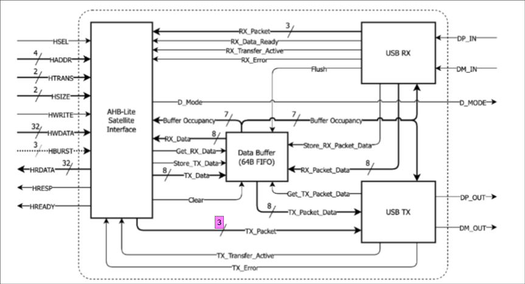
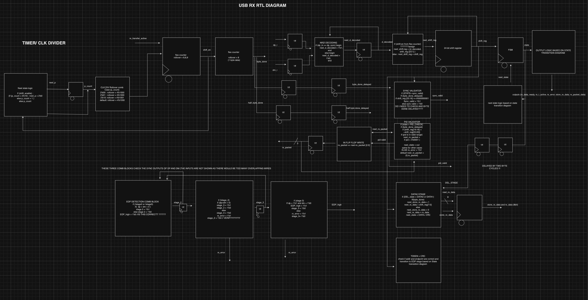
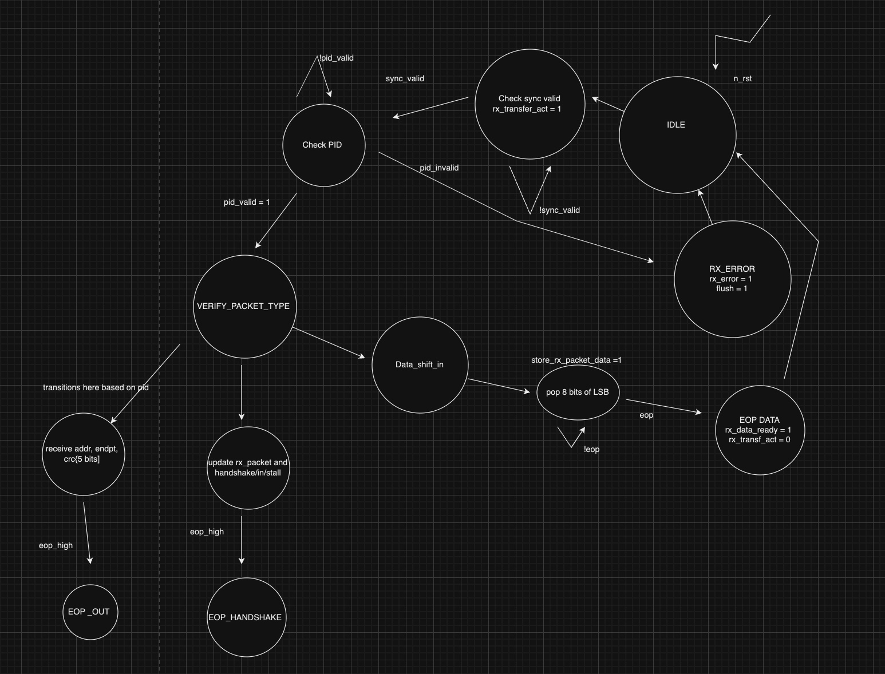
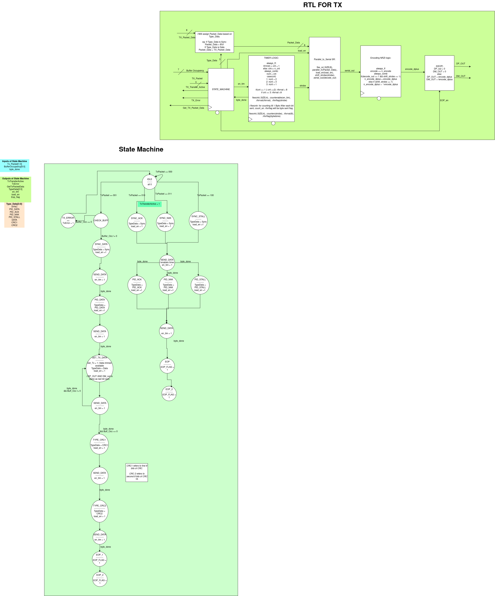
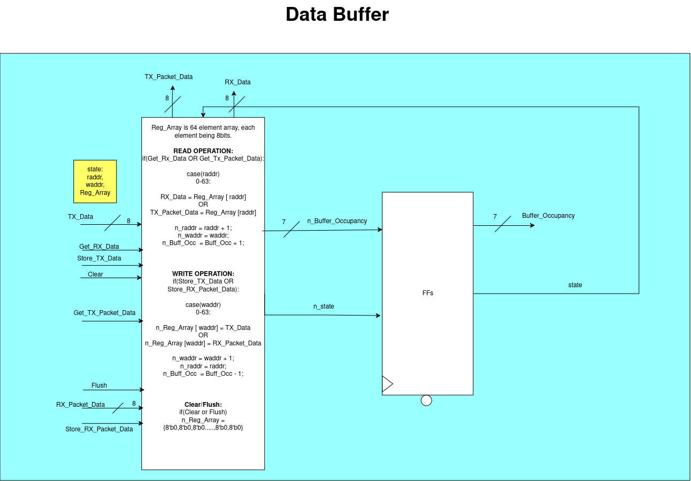
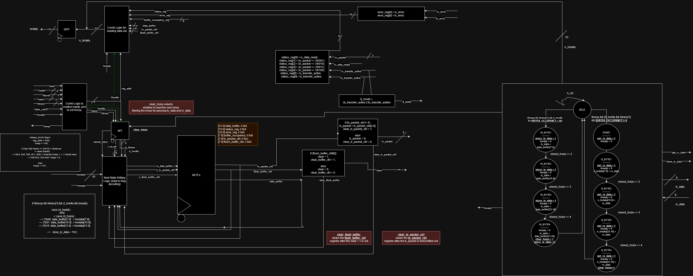

Every module (USB RX, USB TX, Data Buffer, AHB-Lite Satellite, and the full top-level bus) was verified against a directed test plan before integration. The suite covers, among others:
- AHB Satellite: address/size errors, buffer full/empty error paths, status/error register polling, isolated and overlapping read/write (RAW hazard) transactions
- USB TX: ACK / NAK / STALL / DATA packet framing, CRC stuffing, EOP timing, NRZI encoding correctness, 12 MHz bit-timing check
- Data Buffer: overflow/underflow boundary tests (65-byte stress), flush/clear behavior, 32-byte fill monitoring
- USB RX: NRZI decoding, premature-EOP injection at every stage (PID/sync/data), invalid address/endpoint/CRC-length rejection
- Top-level: full host↔endpoint OUT/IN/DATA/ACK sequences exercised end-to-end through the AHB controller
Overview
The design handles USB bulk-transfer packets moving between a host (the managing device) and a device endpoint sitting inside an SoC. Four RTL modules do the work: USB RX receives and validates packets coming from the host, USB TX sends packets back out to the host, a Data Buffer holds the in-flight payload bytes in both directions, and an AHB-Lite Satellite exposes all of it to the SoC's internal bus so the on-chip controller can poll status, push data to send, and pull data that's arrived - all through ordinary AHB-Lite reads and writes.
The USB side runs at the USB 1.0 full/low-speed data rate of 12 MHz with NRZI line encoding on DP/DM; the SoC side runs on a 100 MHz system clock and talks AHB-Lite, so the Satellite is also the clock-domain and protocol bridge between the two worlds.
Design
Top-level architecture
The AHB-Lite Satellite sits in the middle of everything. On one side it's a standard AHB-Lite slave - it decodes haddr/htrans/hwrite/hsize from the controller, drives hrdata/hresp/hready back, and exposes a small set of internal registers (status, error, buffer occupancy, TX packet control, flush control). On the other side it wires directly into USB RX, USB TX, and the shared Data Buffer: it reads out what RX has decoded, writes commands that tell TX what to send, and manages buffer reads/writes and flush/clear signaling for both data directions.

USB RX - reception & validation
RX watches DP/DM for a sync pattern, NRZI-decodes incoming bits through a 24-bit shift register, and runs the result through a small pipeline of validators: sync validation, PID (packet ID) validation, and - for data packets - an EOP/CRC check before the byte is handed to the Data Buffer. RX_Transfer_Active goes high the moment a valid sync is seen and stays high for the whole transfer; RX_Packet tells the Satellite what kind of packet is coming in; RX_Error goes high (and flush fires) on anything malformed - a premature EOP, an out-of-range PID, or an attempt to write into a full buffer.


USB TX - transmission
TX is built out of four pieces: an FSM that branches on the requested packet type (ACK / NAK / STALL / DATA) and drives control signals like enable_timer and EOP_en; a timer running at 12 MHz with an 8/8/9 rollover scheme for correct bit timing; an 8-bit shift register that serializes bytes out to the encoder; and an NRZI encoder that toggles DP/DM on a 0 bit, holds on a 1 bit, and drives the correct end-of-packet sequence. For DATA packets, TX keeps shifting bytes out of the Data Buffer until occupancy hits zero, then appends the (dummy, for this project) CRC and EOP.

Data Buffer
A 64-byte circular register array backs both directions of traffic - bytes coming from the host land here before the SoC reads them out, and bytes the SoC wants to send sit here until TX drains them. Read and write addresses (raddr/waddr) advance independently, buffer occupancy is tracked as a running counter, and a flush/clear input zeroes the whole array on an RX error or an explicit AHB command.

AHB-Lite Satellite
The Satellite owns the SoC-facing register file: a status register (data-ready, packet-type, transfer-active, error flags), an error register, a buffer-occupancy register, a TX-packet-control register the controller writes to kick off a send, and a flush-buffer-control register. Address decoding and write protection ensure the controller can't corrupt reserved bits or write out-of-range addresses (this is exactly what the WRONG ADDR TRANSACTION tests below check), and a small FSM sequences multi-byte register reads/writes (W_BYTE1..4 / R_BYTE1..4) since the AHB data path is narrower than some of the internal state it has to move.

Verification
Every module has its own standalone SystemVerilog testbench before being folded into a full cdl_bus system-level testbench. The plan below is the actual directed test matrix used to sign off each module - it's organized by module, the feature under test, and the expected pass/fail condition.
AHB Satellite
| Test | Stimulus | Expected result |
|---|---|---|
| Wrong-address write | Write to an invalid address | hresp asserted |
| Wrong-size write | 2-byte value written with 1-byte hsize | hresp asserted |
| Poll error register | Set RX/TX error, read back HRData | Bit 0 and bit 8 set per spec |
| Flush | Set flush-buffer-ctrl, read clear + FBCR | Clear pulses high; FBCR clears after 1 cycle |
| TX packet control | Set TX-packet-ctrl, read TX_Packet + TPCR | TX_Packet set correctly; TPCR clears after 1 cycle |
| Data-mode toggling | Set TX_Transfer_Active, then clear it | D_Mode follows high then low |
| Status register | Toggle RX_Data_Ready / RX_Packet / transfer-active bits | Bits 0,1,2,3,4,8,9 match spec |
| Buffer-occupancy readback | Set buffer to varying fill levels | Occupancy register matches exactly |
| Write to full buffer | Fill buffer, then attempt a write | hresp asserted |
| Read from empty buffer | Empty buffer, then attempt a read | hresp asserted |
| Basic 1-byte write / 4-byte write | hsize = 0 single write; hsize = 2 four-byte write | TX Data / data buffer match written value at each FSM stage |
| Basic 1-byte read / 4-byte read | hsize = 0 single read; hsize = 2 four-byte read | RX Data / HRData match buffered value at each FSM stage |
| Overlapping read + write (RAW) | 2-byte write immediately followed by a 1-byte read (and the reverse) | hready stalls correctly; no stale/RAW-hazard data observed on TX/RX Data |
USB TX
| Test | Stimulus | Expected result |
|---|---|---|
| ACK / NAK / STALL | Tx_packet = 2 / 3 / 4 | Correct PID sent; EOP held for 2 bit periods |
| DATA + CRC1/CRC2 + EOP | Tx_packet = 1 | PID_data matches; payload shifts out until buffer empty; dummy CRC bytes appended; EOP held 2 bit periods, then IDLE for 1 |
| 12 MHz timing check | Any TX packet | 250 ns between consecutive strobe cycles |
| NRZI encoding | Waveform-driven CDL packet | DP/DM toggle/hold pattern matches spec when decoded back through RX |
Data Buffer
| Test | Stimulus | Expected result |
|---|---|---|
| Overflow | Write 65 bytes (1 past capacity) | 65th write ignored; waddr pins at 63, occupancy pins at 64 |
| Underflow | Read 65 bytes from an empty/drained buffer | 65th read ignored; raddr pins at 63, occupancy pins at 0 |
| 32-byte fill monitoring | Write 32 bytes sequentially | Buffer contents match exactly at every step |
| Flush / clear | Assert flush or clear from RX/AHB | Register array zeroed; raddr=waddr=0; occupancy = 0 |
USB RX
| Test | Stimulus | Expected result |
|---|---|---|
| Full packet receive (ACK/NAK/IN/OUT/DATA0/DATA1) | Correctly framed packet through EOP | No EOP error; EOP_Verified asserted after the expected cycle count |
| Premature EOP during PID check | DM low for 2 cycles mid-PID-validation | EOP_Verified stays low; RX_Error asserted |
| Premature EOP during sync validation | DM low for 2 cycles mid-sync | Same error path; registered RX data for that byte matches expectation |
| Premature EOP mid-data-byte | DM low for 2 cycles during DATA0/1 stage | RX_Error asserted, buffer flushed |
| Invalid EOP sequence | DP/DM both low for 3 cycles | RX_Error asserted in all cases; buffer flushed |
| NRZI decoding correctness | Toggling / non-toggling DP sequences | Decoded bit = 0 when toggling, 1 when held |
| Invalid address / endpoint | Packet with bad address or nonzero endpoint | RX_Error asserted |
| Invalid CRC length (token / data) | 15 CRC bits instead of 16 (data); 2 instead of 5 (token) | RX_Error asserted |
Top-level (full host ↔ endpoint)
With every module individually verified, a full cdl_bus testbench drives complete host-to-endpoint and endpoint-to-host sequences end-to-end: OUT/IN packet reception, DATA packet reception into the buffer, status-register polling by the AHB controller, ACK generation back to the host, buffer read/clear/write from the controller side, and DATA transmission back out to the host - all checked at the correct 12 MHz USB timing and against the AHB-side hready/hresp contract.
Synthesis results
The full cdl_bus top level was synthesized with Synopsys Design Compiler against the OSU 0.5 µm standard-cell library (osu05_stdcells), the same flow used for ECE 337's ASIC track.
The design carries no clock constraint at the top level (the USB-side timing is generated internally off the 12 MHz/100 MHz counters rather than a single synthesis clock), so Design Compiler reports the longest combinational path - 2.26 ns, from the RX state register out to the rx_transfer_active output pin - as unconstrained rather than against a target frequency. By instance, the Data Buffer's 64×8 register array dominates area and power (roughly 90% of total power draw), which tracks with it being the only real storage element in the design outside of control-state flip-flops.
Conclusions
The trickiest part of this design wasn't any single module in isolation - it was the boundary conditions between them: what happens when the controller tries to read while RX is mid-store, what happens when TX is asked to send while the buffer is still draining from a previous transfer, what happens when EOP shows up somewhere it isn't supposed to. The directed test plan above exists specifically to hit those seams (the RAW-hazard tests on the AHB Satellite and the premature-EOP-injection tests on RX were the ones that actually caught bugs during development, rather than the "happy path" tests). Getting the Satellite's byte-sequencing FSM right - since the internal registers are wider than a single AHB beat in places - also took more iteration than the USB-side timing logic did, which was comparatively mechanical once the 12 MHz timer was correct.
Contributions
This was a 3-person team project. My primary ownership was the AHB-Lite Satellite (register file, address decode, write protection, and the byte-sequencing FSM) and its testbench, plus contributing to the top-level cdl_bus integration testbench. Atharva Bhide and Akshath Raghav Ravikiran led the USB RX/TX datapath and Data Buffer implementations respectively, with all three of us cross-reviewing and debugging the full-system integration together.
Repo & further reading
Full source, testbenches, QuestaSim .do scripts, synthesis reports, and the complete verification plan are in the private repo: github.com/AkshathRaghav/usb-cdl. See all projects for the rest of my write-ups.